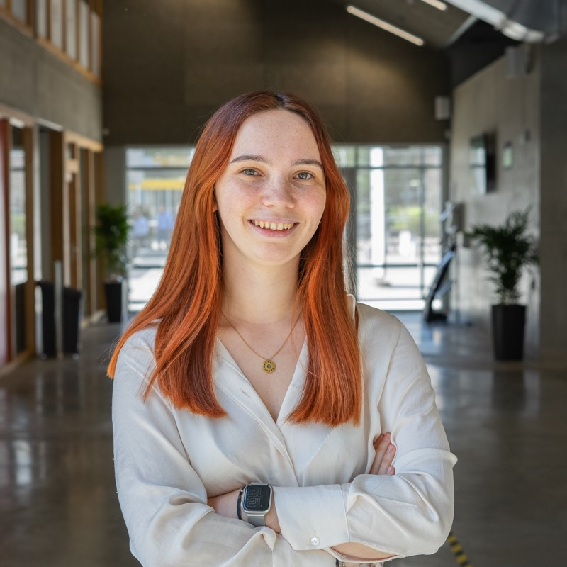
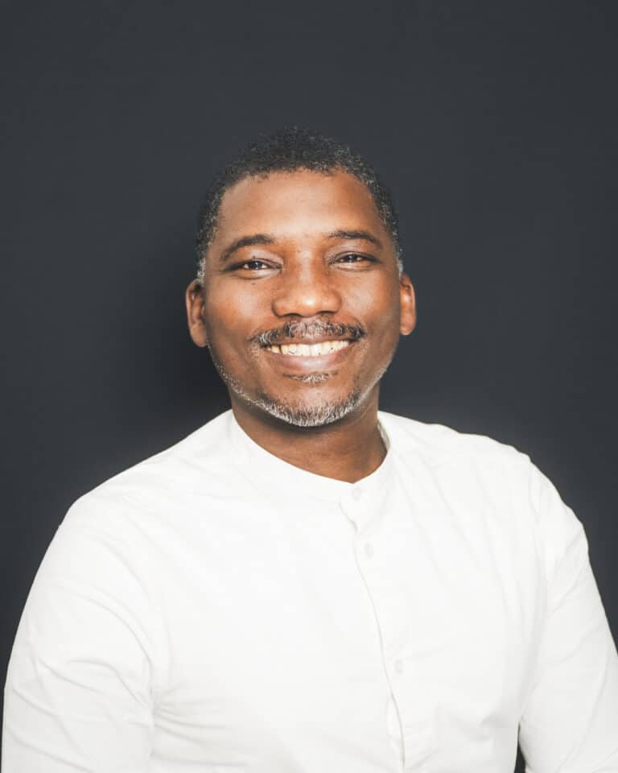
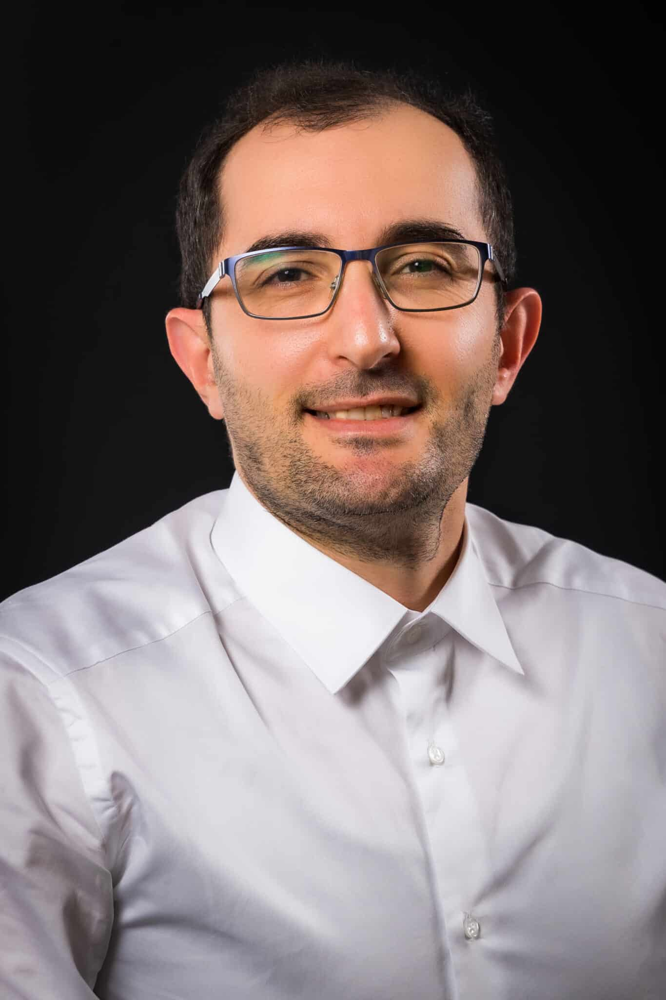
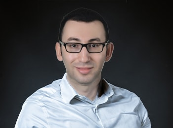
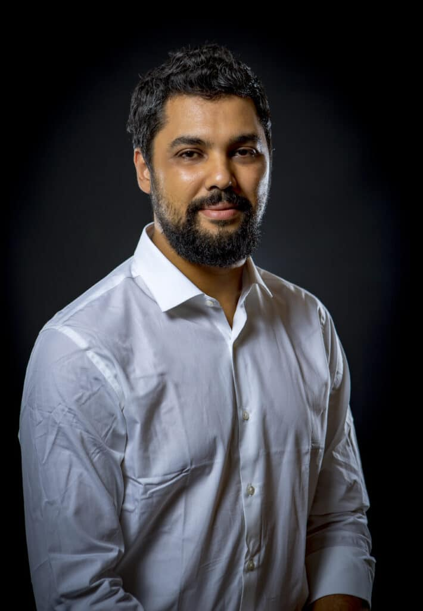
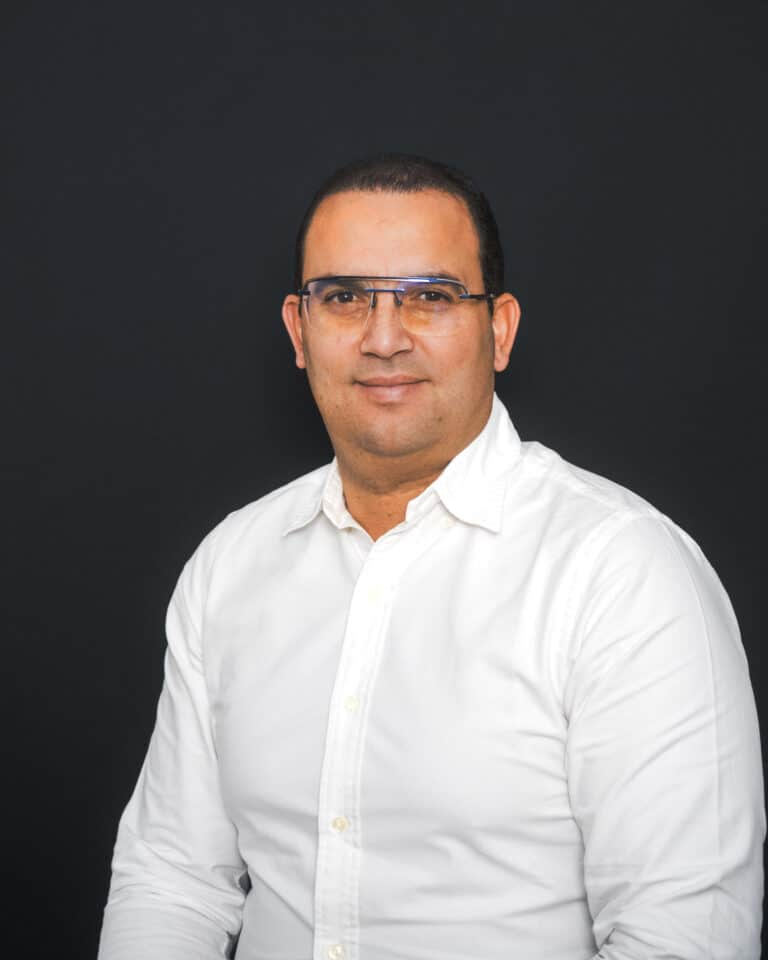
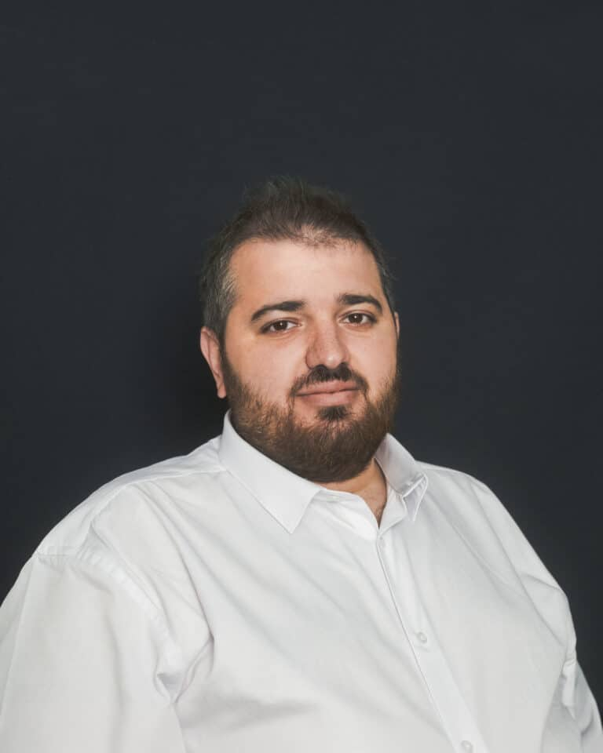

Notre Équipe Pédagogique
Une équipe d'enseignants-chercheurs et d'intervenants passionnés.
Léa Delacroix
Responsable de formation
- Bachelor développeuse web et application
- Licence ingénieure numérique
- Mastère de manager Full stack
Onais Gizat
Référente développement Backend
- Bachelor 1 et 2 PEX

Céline Boitel
Chargés de mission Career center
- Bachelor développeur web et application
- Mastère dev manager full stack
Frédéric Meunier
Directeur général de l'EFREI

Max Agueh
Responsable du pôle sécurité Réseaux, systèmes embarqués
- Polytechnique de l’Université de Nantes (2003). Il complète sa formation scientifique et technique par un Master en Gestion de l’IAE de Paris (2011).
- Il intègre l’Efrei en 2020.

Boussad Ait-Salem
Enseignant-chercheur de l’axe de recherche « Sécurité, Résilience et Confiance Numérique » / Responsable du pôle « Sécurité, Réseaux et Systèmes Embarqués » / Responsable de la majeure « Cybersécurité et cloud »
- Il a préparé sa thèse à l’Université de Limoges au sein de l’équipe PICC (Protection de l’Information, Codage, Cryptographie) du laboratoire Xlim.
- Il obtient son doctorat en 2011 avant d’effectuer un postdoctorat à Orange Labs. Il rejoint l’Efrei en 2020.
Dario Vieira
Professeur associé / Responsable de l’axe de recherche « Réseaux de Communication » / Responsable des modules d’ouverture / Référent Science Ouverte
- Dario a obtenu un diplôme d’ingénieur en informatique de l’Université fédérale de Viçosa au Brésil et un M.S. en informatique de l’Université d’État de Campinas (UNICAMP) au Brésil.
- Il a obtenu un doctorat en réseaux informatiques de Télécom & Management à SudParis. Il a rejoint l’Efrei en 2010.

Feriel Bouakkaz
Enseignante-Chercheuse de l’axe de recherche « Sécurité, Résilience et Confiance numérique»
- Après avoir obtenu son Master Recherche spécialisé en réseaux et sécurité informatique en 2012, Fériel a entamé une thèse en 2013 portant sur l’agrégation de données sécurisée dans les réseaux de capteurs sans fil.
- Elle obtient son doctorat en 2016.

Lamine Bougueroua
Enseignant-Chercheur de l’axe de recherche « Données et Intelligence Artificielle »
- Il obtient son diplôme d’ingénieur en informatique en 1998. Il reçoit ensuite un Master Spécialisé en base de données avancées de l’Université de Versailles en 2001 avant de passer son doctorat à l’Université Paris-EST Creteil en 2007.
- Il rejoint l’Esigetel en 2006 devenu par la suite l’Efrei suite à la fusion entre les deux établissements en 2016.
Layth Sliman
Professeur / Responsable de l’axe de recherche « Sécurité, Résilience et Confiance Numérique » / Habilité à diriger des recherches
- Il est ingénieur en informatique diplômé de l’INSA Lyon. Il a fait par la suite son doctorat à l’INSA Lyon en collaboration avec l’Université des Ryukyus au Japon. Il obtiendra par la suite son HDR à l’Université Paris-Saclay avant de rejoindre l’Efrei en 2010.
- Il obtiendra par la suite son HDR à l’Université Paris-Saclay avant de rejoindre l’Efrei en 2010

Nadjib AIT SAADI
Chercheur associé
- Nadjib Ait Saadi est chercheur associé de l’Efrei Research Lab.

Yessin Neggaz
Enseignant-chercheur de l’axe « Réseaux de Communication » Responsable de la majeure « Networks & Cloud Infrastructure »
- Yessin Neggaz a obtenu son doctorat en informatique à l'université de Bordeaux en octobre 2016
- Il ensuite occupé un poste d’associé d’enseignement et de recherche dans différents établissement avant de rejoindre l’Efrei en 2018.

Souheib Yousfi
Enseignant-chercheur de l’axe de recherche « Sécurité, Résilience et Confiance Numérique »
- Il est diplômé de l’école nationale d’ingénieurs de Tunis ENIT en 2011. Il a obtenu par la suite sa thèse au laboratoire LIP2 avec un sujet de recherche sur la conception et le développement de protocoles de vote électronique.
- Il a rejoint l’Efrei en 2024.

Yulliwas Ameur
Enseignant-chercheur de l’axe de recherche « Sécurité, Résilience et Confiance Numérique »
- Il a récemment soutenu sa thèse de doctorat au CNAM au sein d’un axe de recherche centré sur le chiffrement homomorphe et l’apprentissage automatique.
- Il a également exercé en tant qu’Attaché Temporaire d’Enseignement et de Recherche (ATER) à l’Université Paris Panthéon-Assas avant de rejoindre l’Efrei en 2024.